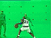
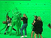
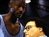

It's not easy being green. Here you've got footage taken from additional cameras on the set (and called "b-roll" by those in the biz) in which Michael Jordan plays against several men who are both shorter than he and less talented at the sport of basketball. The little green men will later be digitally removed and replaced with cartoons. Neat stuff, huh.
Click on the pictures to download Quicktime movie clips.
 
Plus, you can check out some of these other clips from the Space Jam featurette, including interviews with producer Ivan Reitman.
Featurette on the making of Space Jam (2:45, 9 megs)
Producer Ivan Reitman talks about Michael Jordan (20 secs, 1.1 megs)
Reitman talks about Space Jam's genre... (21 secs, 1.2 megs)
SPACE JAM, characters, names, and all related
indicia are trademarks of Warner Bros. © 1996